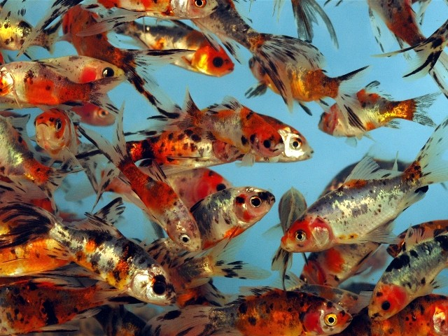
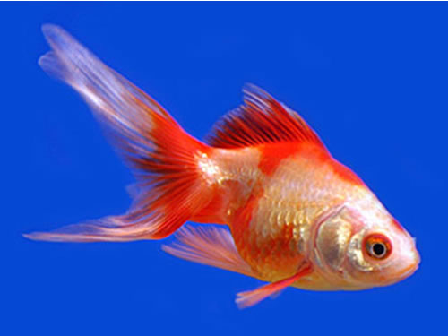
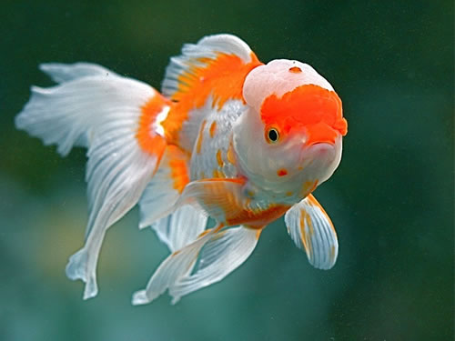

Goldfish

Shubunkins
Slender in body like the comets and commons, but should show in color the violet, red, orange, yellow and with spots of black (calico colors). Also these colors should run into the fins too.There is 2 different kinds of this fish London and Bristols.
4.00
Comet
Slender in body shape and have long single tail fin. They are very hardy fish and will grow on an average of 12-14" long.
3.50
Sakura
Sakura goldfish is any fancy breed that sports the "matte" characteristic in which the majority of the scales are semitransparent but with a sprinkling of several metallic scales and carrying only red pigmentation on its otherwise pinkish-white body. In other words, a calico goldfish minus the black and the blue.
4.00

Fantail
Egg shape body with long doubled or short tail fins. They are somewhat hardy fish. These are the starting point of all the fancy goldfish.
4.50

Pearlscale
Egg shaped goldfish but normally their mid region is much larger than most of the other egg shaped goldfish. The scales have a pearl raised appearance. They come in many different colors.
6.00

Oranda
Egg shaped body with head growth (wen). The wen growth should be well developed. Fin length should be long and flowing.
12.00